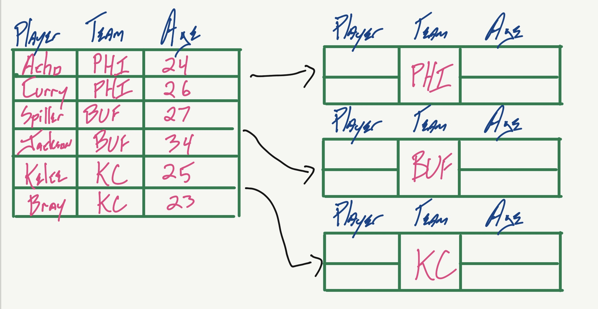
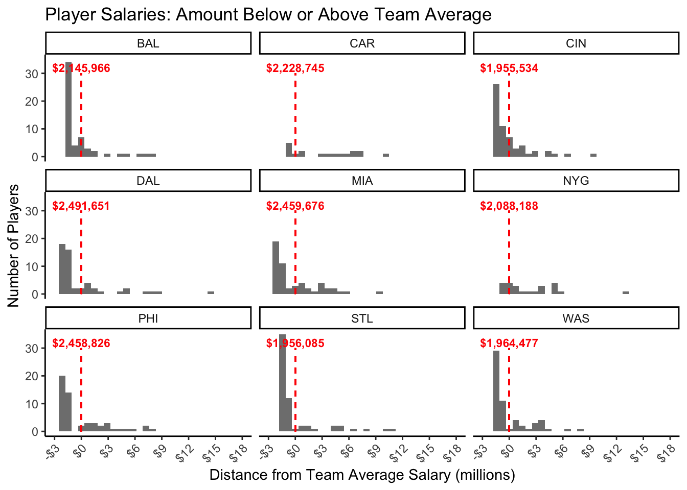

library(dplyr)
library(tidyverse)12 A Deep Dive on group_by()
The group_by() functionality in the Tidyverse is a powerhouse function, with many applications for summarizing and cleaning data. This handout walks through several common use cases for the groupby_() function.
13 Importing the`dplyr`package
The group_by() function technically belongs to the dplyr package, but we can also load it by importing the tidyverse shortcut.
For this walkthrough, we will be using a dataset of information on NFL players. We will use the group_by() function to analyze information across NFL teams. Our dataset consists of 16 columns and 1,822 players (one player per row).
nfl# A tibble: 1,822 × 16
`Player Name` Team Number Position Salary Height Weight Birthdate Age
<chr> <chr> <dbl> <chr> <dbl> <chr> <dbl> <chr> <dbl>
1 Abdullah, Husain KC 39 S 715000 "6'0\… 204 7/27/85 29
2 Abdul-Quddus, Isa NO 42 S 465000 "6'1\… 205 8/3/89 25
3 Aboushi, Oday NYJ 75 OL 589750 "6'5\… 308 6/5/91 24
4 Abraham, John ARI 55 DE 2300000 "6'4\… 263 5/6/78 37
5 Acho, Emmanuel PHI 53 LB 525920 "6'2\… 240 11/10/90 24
6 Acho, Sam ARI 94 LB 628607 "6'3\… 257 9/6/88 26
7 Adams, Joe CAR 15 WR 641888 "5'11… 185 11/22/89 25
8 Adams, Kris NYG 89 WR 510000 "6'3\… 194 9/4/87 27
9 Adams, Kyle CHI 86 TE 465000 "6'4\… 255 1/19/88 27
10 Adams, Michael TB 27 CB NA "5'8\… 181 6/17/85 30
# ℹ 1,812 more rows
# ℹ 7 more variables: Experience <dbl>, College <chr>, City <chr>, State <chr>,
# Race <chr>, birth_date <date>, birth_month <dbl>13.1 What does group_by() do?
When you call group_by() on a dataframe, you are asking R to “organize” your data according to the grouping variable. For example, let’s group our data on NFL players by team. If you look carefully at the output below, you will see that our data has 1,822 rows and 16 columns, just like it did before. However, it now also has 32 groups (one for each NFL team).
nfl %>% group_by(Team)# A tibble: 1,822 × 16
# Groups: Team [32]
`Player Name` Team Number Position Salary Height Weight Birthdate Age
<chr> <chr> <dbl> <chr> <dbl> <chr> <dbl> <chr> <dbl>
1 Abdullah, Husain KC 39 S 715000 "6'0\… 204 7/27/85 29
2 Abdul-Quddus, Isa NO 42 S 465000 "6'1\… 205 8/3/89 25
3 Aboushi, Oday NYJ 75 OL 589750 "6'5\… 308 6/5/91 24
4 Abraham, John ARI 55 DE 2300000 "6'4\… 263 5/6/78 37
5 Acho, Emmanuel PHI 53 LB 525920 "6'2\… 240 11/10/90 24
6 Acho, Sam ARI 94 LB 628607 "6'3\… 257 9/6/88 26
7 Adams, Joe CAR 15 WR 641888 "5'11… 185 11/22/89 25
8 Adams, Kris NYG 89 WR 510000 "6'3\… 194 9/4/87 27
9 Adams, Kyle CHI 86 TE 465000 "6'4\… 255 1/19/88 27
10 Adams, Michael TB 27 CB NA "5'8\… 181 6/17/85 30
# ℹ 1,812 more rows
# ℹ 7 more variables: Experience <dbl>, College <chr>, City <chr>, State <chr>,
# Race <chr>, birth_date <date>, birth_month <dbl>Conceptually, here is a visualization of what R does when you group_by(Team) . Behind the scenes, your data is partitioned according to values of your grouping variables. This becomes extremely useful if we want to calculate group-specific variables or create group-specific summary variables.

13.2 Introducing summarize()
The summarize() function is extremely useful for creating summary statistics on aggregated data, such as calculating the number of observations, the mean of a particular variabe, etc. First, let’s look at what happens when we use summarize() on its own. In the example below, we use summarize() on the ungrouped nfl data to find the overall mean salary of players ($2,142,272).
nfl %>% summarize(mean.salary = mean(Salary, na.rm = TRUE))# A tibble: 1 × 1
mean.salary
<dbl>
1 2142272.We can also use summarize() to get a variety of summary features using different functions to suit our purposes. We can also name these summary variables whatever we want (“mean_salary”, “n_obs”, “number_of_observations”, etc.). The code below calculates the average salary, the standard deviation of salaries, average age of players, and the total number of observations.
Below, you might also notice the n() function. This “short and sweet” function tells us the number of observations that we are summarizing across. In this case, n() returns 1,822–the same number of rows in our NFL data frame!
nfl %>%
summarize(mean_salary = mean(Salary, na.rm = TRUE), # gets the overall average salary
sd_salary = sd(Salary, na.rm = TRUE), # gets the standard deviation of salaries
mean_age = mean(Age, na.rm = TRUE), # we can also look at other variables
n_obs = n() # gets the number of observations
)# A tibble: 1 × 4
mean_salary sd_salary mean_age n_obs
<dbl> <dbl> <dbl> <int>
1 2142272. 2776358. 27.8 182213.3 Combining group_by() with summarize()
Now, let’s add in group_by() to find the average (mean) and maximum salary within each team. Let’s also get a count of the number of players on each team. Our output below has 32 rows—one for each value of the Team grouping variable.
Looking at the output, we can see that the Cleveland Browns (CLE) have an average salary of $1,924,681 and that the Baltimore Ravens (BAL) have an average salary of $2,145,966. Note that we set mean(..., na.rm = TRUE), so we are ignoring any players with missing salary data when calculating our team averages.
nfl %>%
group_by(Team) %>%
summarize(num_players = n(),
mean_sal = mean(Salary, na.rm = TRUE),
max_sal = max(Salary, na.rm = TRUE))# A tibble: 32 × 4
Team num_players mean_sal max_sal
<chr> <int> <dbl> <dbl>
1 ARI 58 2110725. 15750000
2 ATL 55 2278403. 18958333
3 BAL 57 2145966. 20100000
4 BUF 55 1992520. 16000000
5 CAR 61 2228745 12666667
6 CHI 54 2369191. 14000000
7 CIN 59 1955534. 11175000
8 CLE 55 1924681. 10062500
9 DAL 56 2491651. 17071429
10 DEN 60 2145368. 19200000
# ℹ 22 more rows13.3.1 Getting fancy: Grouping with more than one variable
However, we can also group by more than one variable! For example, we can extend our code to get the average salary within each player position on each team. Let’s extend the code above to find the average and maximum salary within each team and position on that team. In this case, the n() summary variable tells us how many observations are within each grouping cell (i.e. the number of players in each position on each team).
What do you notice that is similar or different from the output above with a single grouping variable?
nfl %>%
group_by(Team, Position) %>%
summarize(num_players = n(),
min_sal = min(Salary, na.rm = TRUE),
mean_sal = mean(Salary, na.rm = TRUE),
max_sal = max(Salary, na.rm = TRUE))# A tibble: 471 × 6
# Groups: Team [32]
Team Position num_players min_sal mean_sal max_sal
<chr> <chr> <int> <dbl> <dbl> <dbl>
1 ARI C 1 3250000 3250000 3250000
2 ARI CB 8 498367 1615209. 4607375
3 ARI DE 5 555000 3152000 11000000
4 ARI DL 2 405000 4869166. 9333333
5 ARI K 1 1500000 1500000 1500000
6 ARI LB 8 495000 1317682. 3166667
7 ARI LS 1 1090667 1090667 1090667
8 ARI NT 1 2067000 2067000 2067000
9 ARI OL 9 539856 2250741. 6000000
10 ARI P 1 1150000 1150000 1150000
# ℹ 461 more rows13.4 Using mutate() with group_by()
On its own, the mutate() function allows us to create and modify variables in a dataframe (see Chapter 11 for more information about mutate()). For example, we can use mutate to convert players’ weight from pounds to kilograms.
In this basic example, note that we have not grouped the nfl dataframe.
nfl %>%
select(`Player Name`, Weight) %>%
mutate(weight_kg = Weight / 2.2) %>%
head()# A tibble: 6 × 3
`Player Name` Weight weight_kg
<chr> <dbl> <dbl>
1 Abdullah, Husain 204 92.7
2 Abdul-Quddus, Isa 205 93.2
3 Aboushi, Oday 308 140
4 Abraham, John 263 120.
5 Acho, Emmanuel 240 109.
6 Acho, Sam 257 117. sHowever, when we combine group_by() and mutate() we can create new variables for individual players that reflect group-level attributes. For example, let’s look at how we could find how much younger each player is than the oldest player on their team.
In this case, the grouping variable essentially allows us to create a new column for each individual in the NFL using summary variables within each NFL team.
# let's create a new dataframe to hold our new data
nfl_1 <- nfl %>%
select(`Player Name`, Team, Age) %>%
group_by(Team) %>%
mutate(years_younger = max(Age, na.rm = TRUE) - Age,
team_max_age = max(Age, na.rm = TRUE) # we don't need this, but you can include it to visualize what's happening here
) %>%
arrange(Team) # re-order our data to help us understand how grouping is occurring at the team level
nfl_1 %>% head()# A tibble: 6 × 5
# Groups: Team [1]
`Player Name` Team Age years_younger team_max_age
<chr> <chr> <dbl> <dbl> <dbl>
1 Abraham, John ARI 37 2 39
2 Acho, Sam ARI 26 13 39
3 Alexander, Lorenzo ARI 32 7 39
4 Arenas, Javier ARI 27 12 39
5 Bell, Yeremiah ARI 37 2 39
6 Bethel, Justin ARI 25 14 39If you look at the output above, you will notice that our new nfl_1 dataframe is still grouped by Team. We might not want this, especially if we want to great other variables based on other grouping factors later. We can remove the groups from the nfl_1 dataset like this:
nfl_1 <- nfl_1 %>% ungroup()13.5 Learning Check: What is the difference between pairing group_by() with summarize() vs group_by() with mutate()?
Take a moment to review the output of the code above. How many rows do we have in our resulting dataframes after calling group_by(Team) with summarize() vs group_by(Team) with mutate()?
You might notice that there are far fewer rows in the output from commands using summarize(). This is because the summarize() function collapses data down to return a single value per group level (ex. one row for each of the 32 teams in the NFL). By contrast, using group_by() with mutate() preserves all rows in the data while allowing the user to synthesize and make use of group-level information.
13.6 Practical Application: Centering Data
Centering data is a common practice in social science and education research. For example, we might often be less interested in a student’s absolute test score and more interested in how they performed relative to an average value.
For example, we established above that the average salary in the entire NFL is $2,142,272. We can use centering to calculate the amount each player earns above or below this overall average salary using the code below. This is called “grand mean” centering (i.e. we are comparing each player’s salary to the overall average).
Note that the code below tabulates the average salary mean(Salary) without first calling group_by().
nfl <- nfl %>%
group_by(Team) %>%
mutate(grand_cent_sal = (Salary - mean(Salary, na.rm = TRUE))) %>%
ungroup() # ungroup our data once we have what we need
nfl %>% select(Team, Salary, grand_cent_sal)# A tibble: 1,822 × 3
Team Salary grand_cent_sal
<chr> <dbl> <dbl>
1 KC 715000 -2159274.
2 NO 465000 -1468431.
3 NYJ 589750 -1284454.
4 ARI 2300000 189275.
5 PHI 525920 -1932906.
6 ARI 628607 -1482118.
7 CAR 641888 -1586857
8 NYG 510000 -1578188.
9 CHI 465000 -1904191.
10 TB NA NA
# ℹ 1,812 more rowsWe can visualized the resulting grand_cent_sal data series using ggplot().
ggplot(nfl, aes(x = (grand_cent_sal) / 1000000)) +
geom_histogram(alpha = 0.8) +
geom_segment(x = 0, xend = 0, y = 0, yend = 875, linetype = 'dashed', color = 'red', ) +
annotate(geom = 'text', x = 0, y = 975, label = str_wrap("NFL Average: $2,142,272", 12),
color = 'red', fontface = 'bold') +
scale_x_continuous(breaks = seq(-5, 18.5, 2.5), labels = scales::dollar_format(accuracy = 0.1)) +
scale_y_continuous(breaks = seq(0, 1000, 250), limits = c(0, 1000), labels = scales::comma_format()) +
labs(title = "Player Salaries: Amount Below or Above Average",
x = "Distance from NFL Mean Salary (millions)",
y = "Number of Players") 13.6.1 Group Mean Centering
Now let’s assume that it actually might be more informative to compare players’ salaries to those of other players on the same team. In this case, we want to group our data by team before calculating our centered salary variable. This is called group mean centering.
nfl <- nfl %>%
group_by(Team) %>%
mutate(group_cent_sal = (Salary - mean(Salary, na.rm = TRUE)),
team_average_salary = mean(Salary, na.rm = TRUE))
nfl %>% select(Team, Salary, group_cent_sal, team_average_salary) %>% head()# A tibble: 6 × 4
# Groups: Team [5]
Team Salary group_cent_sal team_average_salary
<chr> <dbl> <dbl> <dbl>
1 KC 715000 -2159274. 2874274.
2 NO 465000 -1468431. 1933431.
3 NYJ 589750 -1284454. 1874204.
4 ARI 2300000 189275. 2110725.
5 PHI 525920 -1932906. 2458826.
6 ARI 628607 -1482118. 2110725.# choose some teams to plot
teams <- sample(unique(nfl$Team), 9)
# get the average salary for each team
team_average_sal_df <- nfl %>%
filter(Team %in% teams) %>%
group_by(Team) %>%
summarize(team_avg_sal = mean(Salary, na.rm = T))
ggplot(nfl %>% filter(Team %in% teams),
aes(x = (group_cent_sal) / 1000000)) +
geom_histogram(alpha = 0.8) +
facet_wrap(~ Team) +
geom_segment(x = 0, xend = 0, y = 0, yend = 30, linetype = 'dashed', color = 'red', ) +
geom_text(data = team_average_sal_df, aes(x = 0, y = 32, label = scales::dollar(team_avg_sal)),
color = 'red', size = 3,
fontface = 'bold', inherit.aes = F) +
scale_x_continuous(breaks = seq(-6, 18.5, 3), limits = c(-3, 18),
labels = scales::dollar_format(accuracy = 1)) +
scale_y_continuous(breaks = seq(0, 30, 10), limits = c(0, 35)) +
labs(title = "Player Salaries: Amount Below or Above Team Average",
x = "Distance from Team Average Salary (millions)",
y = "Number of Players") +
theme(axis.text.x = element_text(angle = 45, hjust = 1))